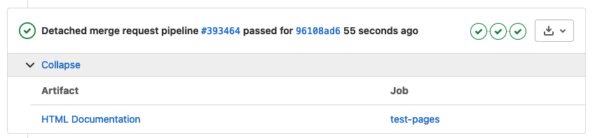

Contributing#
Right now, submission of issues and pull requests through GitHub is the best way to suggest changes, and those will have to be applied and merged on the internal MITRE GitLab and mirrored to GitHub. This process may change in the future.
Contributing for MITRE Employees#
Contributing to the SimFire codebase (GitLab) requires a process to be followed. This page will explain how to follow that process and will provide some tools to make local development easier.
Some guidlines:
Nobody can commit directly to
main.You must create a merge request in order to publish changes to
main.Before merging, all stages of the GitLab CI pipeline must pass. This includes linting with
flake8(config), code-formatting withblack(config), passing the Python unit tests, and creating the documentation.Once all pipeline stages have passed, then the branch can be merged into main.
These pipeline stages can be tested locally to ensure that they are passed on the remote side (explained in Using Pre-commit)
Important Docstring Information#
Do your best to make sure that all docstrings adhere to the following Google format found in fire.py here. The reasoning can be found here. We’re using double quotes for docstrings and strings per the formatting requirements of black.
If you are editing a file and see that a docstring doesn’t adhere to the Python3 Google Style Guide exemplified in fire.py, please be a good steward and fix it so that it does.
Issue & Merge Request Creation#
Create or assign an issue to yourself at the Group Issue Board Page, add the label SimFire, and move it to “Doing”.
Create a merge request based on that issue using the “Create Merge Request” button on the issue page.
Environment Setup#
First, clone the repository:
git clone git@gitlab.mitre.org:fireline/simfire.git
Create a conda environment (preferred):
conda create -n sf python=3.9
Install poetry and activate the conda environment:
curl -sSL https://install.python-poetry.org | python -
echo "export PATH=$PATH:$HOME/.local/bin" >> $HOME/.bashrc
source $HOME/.bashrc
conda activate sf
Then, install the developer requirements:
poetry install
Using Pre-commit (Highly Recommended)#
If you’d like, you can install pre-commit to run linting and code-formatting before you are able to commit. This will ensure that you pass this portion of the remote pipelines when you push to your merge request.
pre-commit install
Now, every time you try to commit, your code that you have staged will be linted by flake8 and auto-formatted by black. If the linting doesn’t pass pre-commit, it will tell you, and you’ll have to make those changes before committing those files. If black autoformats your code during pre-commit, you can view those changes and then you’ll have to stage them. Then you can commit and push.
Pre-commit can also be run manually on all files without having to commit.
pre-commit run --all-files
Running Unit Tests#
There are also unit tests that need to be passed, and to make sure you are passing those locally (before pushing to your remote branch and running the pipeline) you can run the following command in the root directory:
poetry run pytest
This will search for all test_*.py files and run the tests held in those files.
Adding Packages & Modules#
If you add a package or module, make sure to create a unit test for it and preferably all classes and functions within it. When creating a package (directory with Python modules), add a _tests directory that mirrors the package directory. See the example below:
simfire
├── game
│ ├── managers
│ │ ├── __init__.py
│ │ ├── _tests
│ │ │ ├── __init__.py
│ │ │ ├── test_fire.py
│ │ │ └── test_mitigation.py
│ │ ├── fire.py
│ │ └── mitigation.py
In the managers package, there are two modules, fire and mitigation. These are mirrored in the _tests directory as test_fire.py and test_mitigation.py. And inside each of those, there is a mirrored Test class for every class in each module:
fire.py#
class FireManager():
test_fire.py#
class TestFireManager(unittest.TestCase):
And usually, there is a test for every testable function in that class. Try to adhere to this standard when creating new packages, modules, classes, and functions.
Adding Documentation#
API documentation is autogenerated by Sphinx AutoAPI.
If you’d like to add to this documentation, you can create markdown or .rst files in the docs/source directory, and add them to the index.rst under the toctree:
fiReLine SimFire Fire Simulator
===============================
Running The Simulation
----------------------
:doc:`intro`
Introduction to installing and running the simulation.
:doc:`config`
The different configuration parameters to set for the simulation and their defaults.
Development
-----------
:doc:`contributing`
How to contribute changes to the codebase or to documentation.
API
---
:doc:`autoapi/index`
.. Hidden TOCs
.. toctree::
:maxdepth: 2
:caption: Running the Simulation
:hidden:
intro
config
.. toctree::
:maxdepth: 2
:caption: Development
:hidden:
contributing
.. toctree::
:maxdepth: 1
:caption: API Reference
:hidden:
autoapi/index
Indices and tables
------------------
* :ref:`genindex`
* :ref:`modindex`
* :ref:`search`
Where your file is located in that toctree (Table of Contents Tree) is where the page will exist in the sidebar and on the homepage.
Pushing Doc Changes to MRs#
Every time changes are pushed to a merge request, artifacts will be created that will allow you to view the hosted version of the GitLab Pages documentation, seen if you click on HTML Documentation (see below) and navigate to public/index.html.

Testing Documentation Locally#
In order test documentation locally, you’ll first have to install all the necessary packages that are left out of the poetry install command (this is installed automatically during CI):
poetry install --with docs
Then, you can build the documentation:
poetry run sphinx-build -d docs/build/doctrees docs/source docs/build/html
And view it by opening the index.html file located at:
docs/build/html/index.html
If you’re working locally, just find the file location, and open the file in a browser by copying the path.